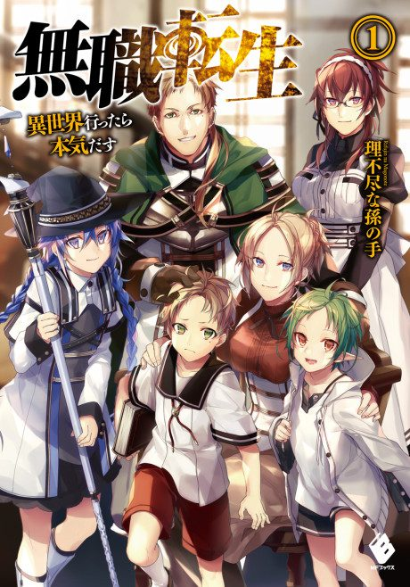

Ani
meter
My list
← Rankings
Mushoku Tensei: Jobless Reincarnation
Anime

Mushoku Tensei: Jobless Reincarnation
Light novel
2021 · Adventure, Drama, Ecchi
Mushoku Tensei: Jobless Reincarnation
無職転生 ～異世界行ったら本気だす～
AniList
8.2
Animeter
—
5 seasons
62 ep
Source
Light novel
Sign in to rate and report. We email you a link, no password.
Email me a link
Overview
Seasons
5
Arcs
15
Key events
43
Filler
Manga
Filler
No filler: every episode adapts the light novels (the Eris OVA is not counted).
Episodes
62
Canon
62
Filler
0
Mixed
0
Sources:
Wikipedia
,
Wikipedia
,
Wikipedia
,
Quote The Anime
,
Anime Corner
,
Anime Corner